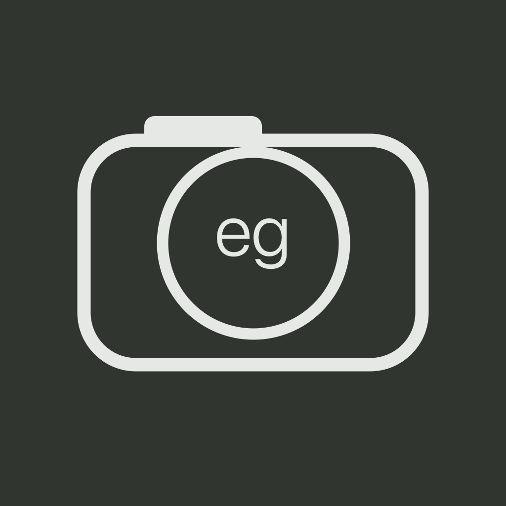
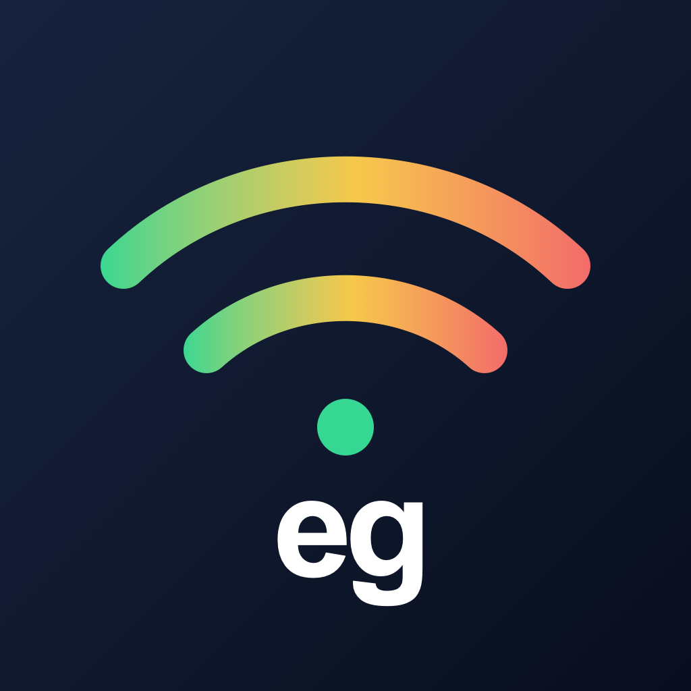
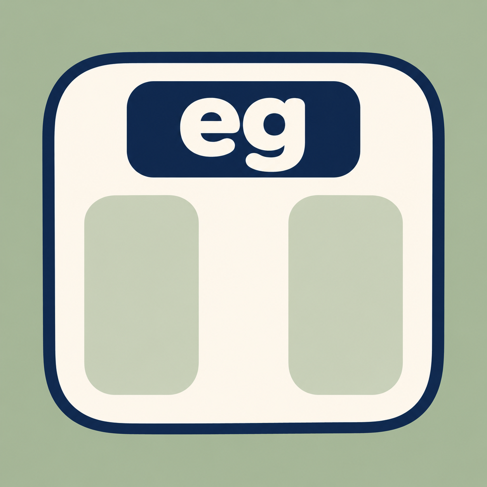

開発中・非公開egcamera
選んだ LUT の色を撮影前に確認できる、写真専用の iPhone カメラ。仕上げた HEIF と編集に使える ProRAW DNG を残します。
機能と使い方を見るApps by egyo
写真を撮る、通信の変化を見る、体重を振り返る、好きな対戦予定を知る、使っていない画面を静かに暗くする、Mac の作業環境を整える。現在開発している iPhone と Mac 向けアプリを紹介します。

開発中・非公開選んだ LUT の色を撮影前に確認できる、写真専用の iPhone カメラ。仕上げた HEIF と編集に使える ProRAW DNG を残します。
機能と使い方を見る
開発中・非公開新幹線など移動中の通信の変化を、ping の応答時間（ms）で確認する iPhone アプリ。ロック画面の Live Activity と、対応機種の Dynamic Island に色分けして表示します。
機能と使い方を見る
開発中・非公開朝と夜の体重を分けて、変化をやさしく振り返る体重日記。ヘルスケアの記録と7日間の平均を眺め、言い訳も、がんばったこともひとこと残すアプリを設計しています。
機能と使い方を見る好きなステージの時間を、逃さずに。スプラトゥーン3の時間帯・ルール・マッチ・ステージを選び、好みに合う予定を開始前や指定時刻にお知らせする iPhone アプリ。
機能と使い方を見るアプリについてのご意見やお問い合わせは X アカウントからお願いします。